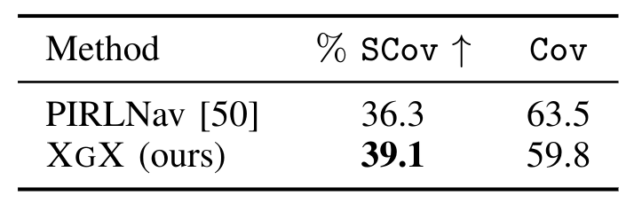
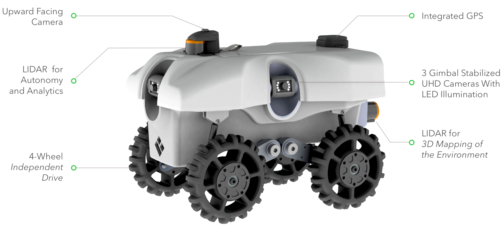
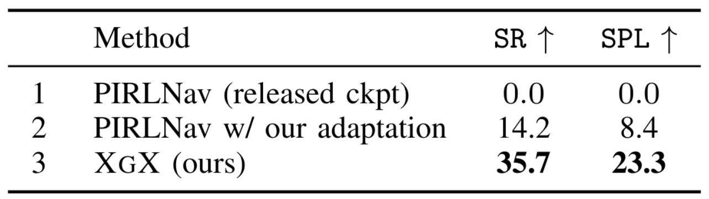

Exploitation-Guided Exploration for Semantic Embodied Navigation
Abstract
In the recent progress in embodied navigation and sim-to-robot transfer, modular policies have emerged as a de facto framework. However, there is more to compositionality beyond the decomposition of the learning load into modular components. In this work, we investigate a principled way to syntactically combine these components. Particularly, we propose Exploitation-Guided Exploration (XGX) where separate modules for exploration and exploitation come together in a novel and intuitive manner. We configure the exploitation module to take over in the deterministic final steps of navigation i.e. when the goal becomes visible. Crucially, an exploitation module teacher-forces the exploration module and continues driving an overridden policy optimization. XGX, with effective decomposition and novel guidance, improves the state-of-the-art performance on the challenging object navigation task from 70% to 73%. Along with better accuracy, through targeted analysis, we show that XGX is also more efficient at goal-conditioned exploration. Finally, we show sim-to-real transfer to robot hardware and XGX performs over two-fold better than the best baseline from simulation benchmarking.
XGX
Simulation Results
In simulated results using AiHabitat, we acheive state-of-the-art performance on the object-goal task.
Furthermore, XGX was more effective at exploring the environment than the previous state-of-the-art baselines..

Real World Results
Robot Morphology
The robot morphology is given below, some notable key features in the wheeled robot include: (1) Four independent trains (2) LIDAR for autonomy and mapping (3) Zero radius turns help us in the policy transfer
Real-World Object-Goal Navigation Results
XGX outperforms the relevent baselines and performed the best after sim-to-real transfer of the policies.